NCERT Solutions for Class 11 Physics Chapter 13 Kinetic Theory are part of Class 11 Physics NCERT Solutions. Here we have given NCERT Solutions for Class 11 Physics Chapter 13 Kinetic Theory.
NCERT Solutions for Class 11 Physics Chapter 13 Kinetic Theory
Topics and Subtopics in NCERT Solutions for Class 11 Physics Chapter 13 Kinetic Theory:
| Section Name | Topic Name |
| 13 | Kinetic Theory |
| 13.1 | Introduction |
| 13.2 | Molecular nature of matter |
| 13.3 | Behaviour of gases |
| 13.4 | Kinetic theory of an ideal gas |
| 13.5 | Law of equipartition of energy |
| 13.6 | Specific heat capacity |
| 13.7 | Mean free path |
NCERT Solutions Class 11 PhysicsPhysics Sample Papers
QUESTIONS FROM TEXTBOOK
Question 13. 1. Estimate the fraction of molecular volume to the actual volume occupied by oxygen gas at STP.’ Take the diameter of an oxygen molecule to be 3 A.
Answer: Diameter of an oxygen molecule, d = 3 A = 3 x 10-10 m. Consider one mole of oxygen gas at STP, which contain total NA = 6.023 x 1023 molecules.
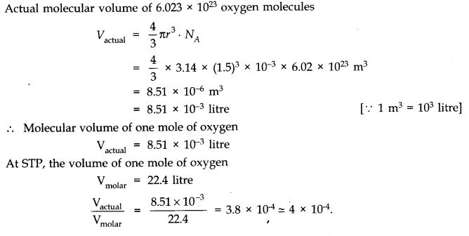
Question 13. 2. Molar volume is the volume occupied by 1 mol of any (ideal) gas at standard temperature and pressure (STP : 1 atmospheric pressure, 0 °C). Show that it is 22.4 litres.
Answer:
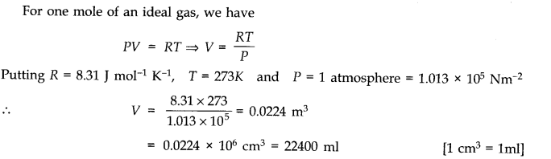
More Resources for CBSE Class 11
- NCERT Solutions
- NCERT Solutions Class 11 Maths
- NCERT Solutions Class 11 Physics
- NCERT Solutions Class 11 Chemistry
- NCERT Solutions Class 11 Biology
- NCERT Solutions Class 11 Hindi
- NCERT Solutions Class 11 English
- NCERT Solutions Class 11 Business Studies
- NCERT Solutions Class 11 Accountancy
- NCERT Solutions Class 11 Psychology
- NCERT Solutions Class 11 Entrepreneurship
- NCERT Solutions Class 11 Indian Economic Development
- NCERT Solutions Class 11 Computer Science
Question 13. 3. Following figure shows plot of PV/T versus P for 1.00 x 10-3 kg of oxygen gas at two different temperatures.
(a) What does the dotted plot signify?
(b) Which is true : T1> T2 or T1< T2?
(c) What is the value of PV/T where the curves meet on the y-axis?
(d) If we obtained similar plots for 1.00 x 10-3 kg of hydrogen, would we get the same value of PV/T at the point where the curves meet on the y-axis? If not, what mass of hydrogen yields the same value of PV/T (for the low-pressure high-temperature region of the plot) ? (Molecular mass of H2 = 2.02 u, of O2 = 32.0 u, R = 8.31 J mol-1 K-1.)
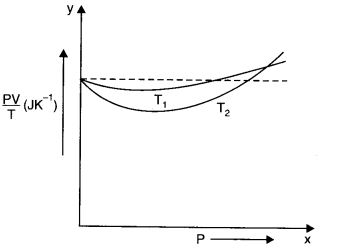
Answer: (a) The dotted plot corresponds to ‘ideal’ gas behaviour as it is parallel to P-axis and it tells that value of PV/T remains same even when P is changed.
(b) The upper position of PV/T shows that its value is lesser for T1 thus T1 > T2. This is because the curve at T1 is more close to dotted plot than the curve at T2 Since the behaviour of a real gas approaches the perfect gas behaviour, as the temperature is increased.
(c) Where the two curves meet, the value of PV/T on y-axis is equal to μR. Since ideal gas equation for μ moles is PV = μRT
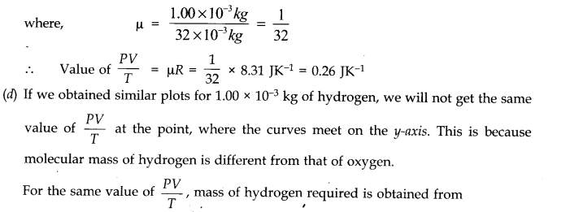
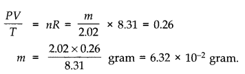
Question 13. 4. An oxygen cylinder of volume 30 Hire has an initial gauge pressure of 15 atmosphere and a temperature of 27 °C. After some oxygen is withdrawn from the cylinder, the gauge pressure drops to 11 atmosphere and its temperature drops to 17 °C. Estimate the mass of oxygen taken out of the cylinder. (R = 8.31 J mol-1 K-1, molecular mass of O2 = 32 u.)
Answer:
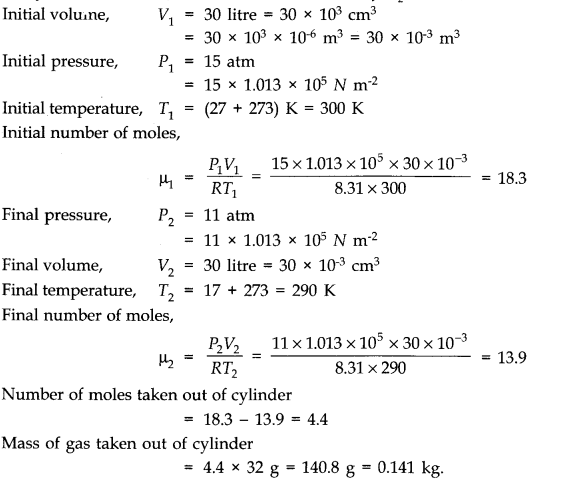
Question 13. 5. An air bubble of volume 1.0 cm3 rises from the bottom of a lake 40 m deep at a temperature of 12°C. To what volume does it grow when it reaches the surface, which is at a temperature of 35 °C.
Answer:
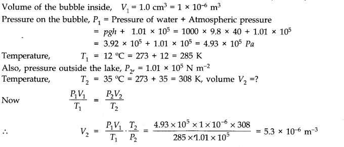
Question 13. 6. Estimate the total number of air molecules (inclusive of oxygen, nitrogen, water vapour and other constituents) in a room of capacity 25.0 m3 at a temperature of 27 °C and 1 atm pressure.
Answer:
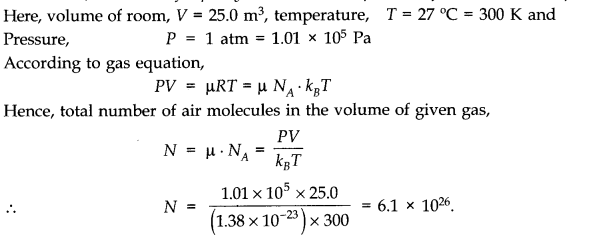
Question 13. 7. Estimate the average thermal energy of a helium atom at (i) room temperature (27 °C), (ii) the temperature on the surface of the Sun (6000 K), (iii) the temperature of 10 million kelvin (the typical core temperature in the case of a star).
Answer:
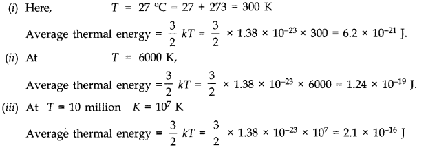
Question 13. 8. Three vessels of equal capacity have gases at the same temperature and pressure. The first vessel contains neon (monoatomic), the second contains chlorine (diatomic), and the third contains uranium hexafluoride (polyatomic). Do the vessels contain equal number of respective molecules? Is the root mean square speed of molecules the same in the three cases? If not, in which case is vrms the largest?
Answer: Equal volumes of all the gases under similar conditions of pressure and temperature contains equal number of molecules (according to Avogadro’s hypothesis). Therefore, the number of molecules in each case is same.
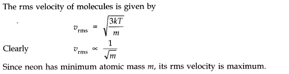
Question 13. 9. At what temperature is the root mean square speed of an atom in an argon gas cylinder equal to the rms speed of a helium gas atom at -20 °C? (atomic mass of Ar = 39.9 u, of He = 4.0 u).
Answer: Let C and C’ be the rms velocity of argon and a helium gas atoms at temperature T K and T K respectively.
Here, M = 39.9; M’ = 4.0; T =?; T = -20 + 273 = 253 K
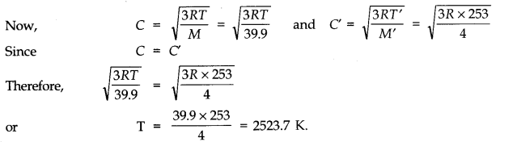
Question 13. 10. Estimate the mean free path and collision frequency of a nitrogen molecule in a cylinder containing nitrogen at 2.0 atm and temperature 17 °C. Take the radius of a nitrogen molecule to be roughly 1.0 A. Compare the collision time with the time the molecule moves freely between two successive collisions (Molecular mass of N2 = 28.0 u).
Answer:
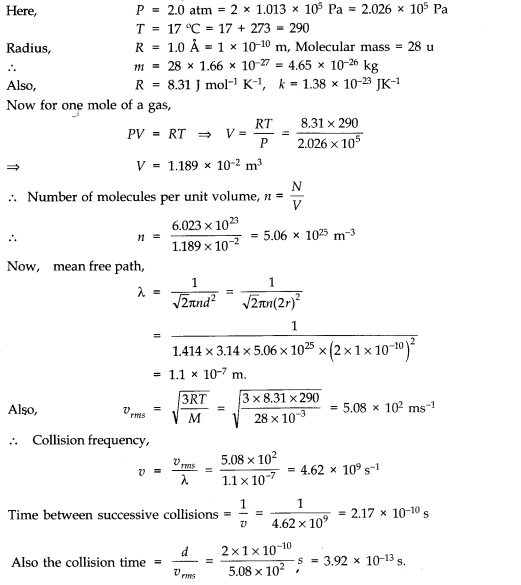
Question 13. 11. A meter long narrow bore held horizontally (and closed at one end) contains a 76 cm long mercury thread which traps a 15 cm column of air. What happens if the tube is held vertically with the open end at the bottom?
Answer: When the tube is held horizontally, the mercury thread of length 76 cm traps a length of air = 15 cm. A length of 9 cm of the tube will be left at the open end. The pressure of air enclosed in tube will be atmospheric pressure. Let area of cross-section of the tube be 1 sq. cm.
.’. P1 = 76 cm and V1 = 15 cm3
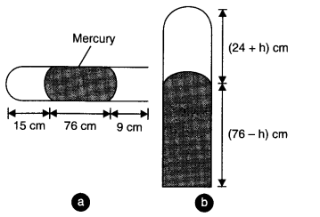
When the tube is held vertically, 15 cm air gets another 9 cm of air (filled in the right handside in the horizontal position) and let h cm of mercury flows out to balance the atmospheric pressure. Then the heights of air column and mercury column are (24 + h) cm and (76 – h) cm respectively.
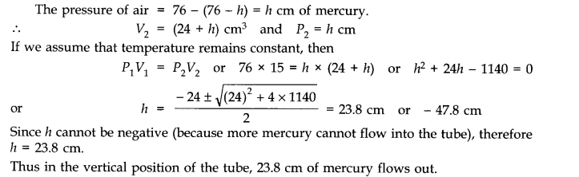
Question 13. 12. From a certain apparatus, the diffusion rate of hydrogen has an average value of 28.7 cm3 s-1. The diffusion of another gas under the same conditions is measured to have an average rate of 7.2 cm3 s-1. Identify the gas.
Answer: According to Graham’s law of diffusion of gases, the rate of diffusion of a gas is inversely proportional to the square root of its molecular mass.
If R1 and R2 be the rates of diffusion of two gases having molecular masses M1 and M2 respectively, then
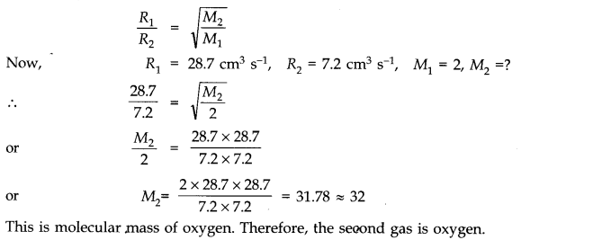
Question 13. 13. A gas in equilibrium has uniform density and pressure throughout its volume. This is strictly true only if there are no external influences. A gas column under gravity, for example, does not have uniform density (and pressure). As you might expect, its density decreases with height. The precise dependence is given by the so-called law of atmospheres n2 = n1 exp [ – mg (h2 – h1)/kBT]
where n2, n1 refer to number density at heights h2 and h1 respectively. Use this relation to derive the equation for sedimentation equilibrium of a suspension in a liquid column :
n2 = n1 exp [ – mg NA(ρ – P) (h2 – h1 )/(ρ RT)] where ρ is the density of the suspended particle, and ρ that of surrounding medium. [NA is Avogadro’s number, and R the universal gas constant.]
[Hint: Use Archimedes principle to find the apparent weight of the suspended particle.]
Answer: Considering the particles and molecules to be spherical, the weight of the particle is
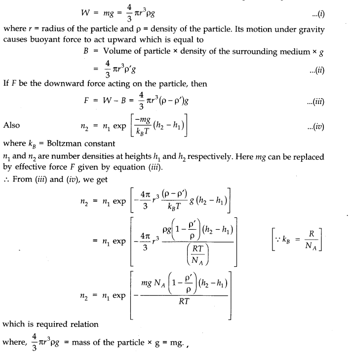
Question 13. 14. Given below are densities of some solids and liquids. Give rough estimates of the size of their atoms
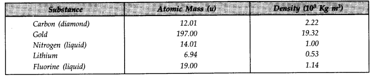
[Hint: Assume the atoms to be ‘tightly packed’ in a solid or liquid phase, and use the known value of Avogadro’s number. You should, however, not take the actual numbers you obtain for various atomic sizes too literally. Because of the crudeness of the tight packing approximation, the results only indicate that atomic sizes are in the range of a few A].
Answer: In one mole of a substance, there are 6.023 x 1023 atoms
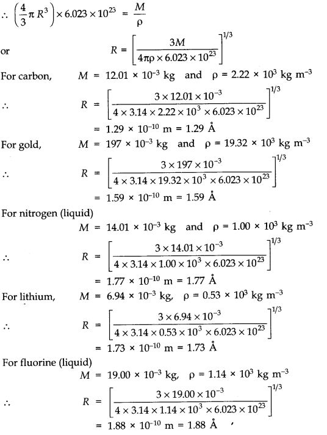
NCERT Solutions for Class 11 Physics All Chapters
- Chapter 1 Physical World
- Chapter 2 Units and Measurements
- Chapter 3 Motion in a Straight Line
- Chapter 4 Motion in a plane
- Chapter 5 Laws of motion
- Chapter 6 Work Energy and power
- Chapter 7 System of particles and Rotational Motion
- Chapter 8 Gravitation
- Chapter 9 Mechanical Properties Of Solids
- Chapter 10 Mechanical Properties Of Fluids
- Chapter 11 Thermal Properties of matter
- Chapter 12 Thermodynamics
- Chapter 13 Kinetic Theory
- Chapter 14 Oscillations
- Chapter 15 Waves
We hope the NCERT Solutions for Class 11 Physics Chapter 13 Kinetic Theory help you. If you have any query regarding NCERT Solutions for Class 11 Physics Chapter 13 Kinetic Theory, drop a comment below and we will get back to you at the earliest.